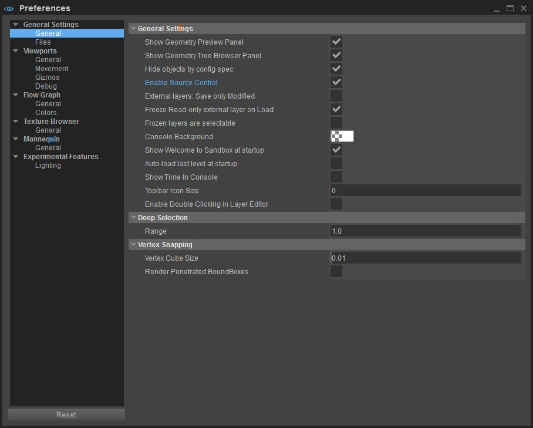
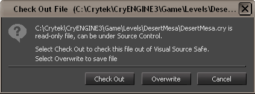

Поддержка Perforce доступна только для полных пакетов кода Engine и требует дополнительных файлов *.dll.
Обзор
Perforce — это программное обеспечение для контроля версий, интегрированное в редактор Sandbox. Sandbox автоматически определяет, доступен ли Perforce или нет.
Установка и настройка
Чтобы интегрировать Perforce с редактором Sandbox, Perforce должен быть правильно настроен на вашем PC и для переменных среды P4CLIENT, P4PORT и P4USER установлены правильные настройки.
Чтобы проверить правильность настройки, вы должны иметь возможность использовать утилиту командной строки P4.exe (поставляемую Perforce) для синхронизации файлов.
Как только GameSDK\Levels\ каталог синхронизируется с Perforce, после чего можно запустить редактор Sandbox.
Sandbox Настройки
Перейдите в окно настроек под Правка → Настройки.
Под Общие настройки → Общие убедитесь, что Включить систему контроля версий флажок установлен. Это интегрирует Perforce с редактором Sandbox.

Если флажок установлен, но без правильной настройки сервера Perforce, пользователи могут столкнуться с замедлением работы Material Editor или других инструментов, использующих преимущества системы контроля версий. В этом случае просто снимите флажок, чтобы вернуться к нормальной работе без контроля версий.
При сохранении уровня, синхронизированного с Perforce, в окне сообщения будет предложено заменить файл *.cry. Нажмите кнопку Перезаписать или Выезд коробки.

После того как файл *.cry был извлечен или перезаписан с помощью редактора Sandbox, необходимо использовать клиент Perforce для подготовки к отправке файлов.